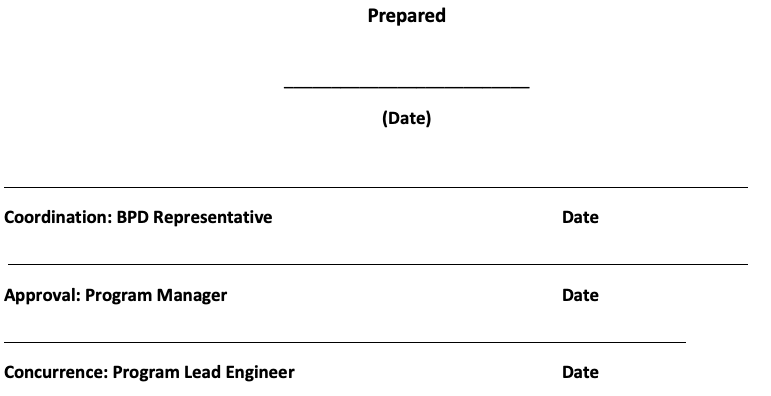

11.4 BPD Tailoring Worksheet for Engineering and Manufacturing Development Phase, Production & Deployment Phase, and Operations & Support Phase (24 September, 2018)

For guidance and instruction on the Tailoring Worksheet, refer to the BPD Tailoring Guide.
NOTE: For AAM Agile contract projects, the Agile (Scrum, Kanban, and XP) best practices described in the Agile and AAM Playbooks will replace the BPD IT Lean waterfall centric phases, reviews and documentation. One of the key AAM contract project assumptions is that the documentation work product artifacts of the legacy system application undergoing modernization and migration to the cloud currently exist, are in accordance with the BPD templates and have been reviewed and approved by the government PMO. If not, only documentation work products agreed to by the application Product Owner will be included in the application release Product Backlog.
When a work product is marked with a checkmark (✔) or asterisk (*), that work product shall either be produced or if it already exists, updated as necessary. In either case, the work product must be consistent with the current release.
The “JUSTIFICATION FOR TAILORING” column of this template identifies products that shall be tailored out if the Preliminary Design Review (PDR) occurs after Milestone B. Refer to the BPD Tailoring Guide for conditions regarding when the PDR occurs in relation to Milestone B.
NOTE: For AAM Agile contract projects, iterative Agile Scrum management practices, XP engineering practices, and product documentation artifacts maintained in the Jira Work Management Tool and Confluence Project Wiki. These work product artifacts will be substituted for the IT Lean reviews and document work product artifacts in the BPD Tailoring Worksheet.
Every product delivered to the customer must have a Peer Review and Minutes. All meetings and reviews conducted will be formally documented with formal meeting minutes. Action items identified during meetings and reviews will be tracked to closure. Refer to the Peer Review Procedure.
NOTE: For AAM Agile contract projects, Agile Product Backlog grooming, iterative Scrum Sprint Backlog Refinement, Sprint Demos, ‘Definition of Done’ criteria, sprint Retrospectives, and Release Integration (Minimum viable Product criteria) review and testing activities of the product user stories and features are performed with the Development Team, Product Owner and Stakeholders. These procedures will replace the BPD Peer Review Procedure.
Review the pertinent sections of the Lessons Learned Database. The database is available for help in avoiding previous pitfalls and for providing ideas that have worked well for others. It can be found on the BPD web site.
Review the pertinent sections of the AAM Playbook for project guidance in terms of project organization, staffing, management and engineering practices, project phases, work items and deliverables. It can be found on the BES Playbooks web site: https://besplaybook.github.io/BESPlaybook/.
The following table prescribes work item products that are recommended for an AAM Agile contract project.
| Row No. | ✔, * or N/A | Product | References | Justification for Tailoring |
|---|---|---|---|---|
| 1 | ✔ | Stakeholder List | Stakeholder Identification and Assessment Template | Stakeholder Communications plan |
| 2 | N/A | Integrated Baseline Review (IBR) and Minutes | IBR Procedure | Using Scrum Management Practices |
| 3 | * | Final Configuration Management Plan (CMP) | Configuration Management Planning Procedure | |
| 4 | N/A | Intergroup Coordination Checklist | Intergroup Coordination Checklist Template | |
| 5 | N/A | Initial Integrated Test Design (IITD) Artifacts | IITD Procedure | Tailor out if PDR occurs before Milestone B |
| * | Updated Integrated Test Team (ITT) Charter | ITT Guide ITT Charter Template |
||
| * | Updated Test and Evaluation Master Plan (TEMP) | TEMP Template | ||
| * | Updated Integrated Test Plan (ITP) | ITP Template | ||
| ✔ | Draft Test Scenarios, Test Cases, and Test Scripts | Test Script Template | Replaced with User Story or Feature Manual and Automated Test Scripts (to the extent Practical) and ‘Definition of Done’ | |
| N/A | Updated Integrated Test Description (ITD) | ITD Template | See Above | |
| 6 | N/A | Work Breakdown Structure (WBS) | WBS Procedure | Replaced with Scrum Product Backlog and Sprint Backlog tasks and work items |
| 7 | ✔ | Refined Schedule and Cost | ||
| 8 | * | Updated Project-Specific Training Plan | Project-Specific Training Procedure | |
| 9 | * | Updated Risks | Risk and Issue Management Process | |
| 10 | N/A | Updated Systems Engineering Plan | Systems Engineering Plan Outline | Replaced with Scrum Management and XP Engineering Practices |
| Air Force Implementation of New Office of the Secretary of Defense (OSD) Templates Air Force Materiel Command Instruction (AFMCI) 63-1201 & applicable supplement | Air Force Implementation of New Office of the Secretary of Defense (OSD) Templates Air Force Materiel Command Instruction (AFMCI) 63-1201 & applicable supplement |
|||
| 11 | N/A | Configuration Control Directive (CCD) | CCD Form | Replaced with CI/CD Pipeline Processes |
| 12 | N/A | Functional Review Board (FRB) and minutes | FRB Procedure | Replaced by Product Owner and designated Stakeholders providing engineering support |
| Row No. | ✔, * or N/A | Product | References | Justification for Tailoring |
|---|---|---|---|---|
| 13 | N/A | Software Development Plan (SDP) | SDP Template | Tailor out if PDR occurs before Milestone B |
| 14 | N/A | General Requirements Specification (GRS) | GRS Template | Tailor out if PDR occurs before Milestone B |
| 15 | * | Updated Requirements Traceability Matrix (RTM) | RTM Template | Provided in Jira format |
| 16 | * | Updated Responses in Enterprise Information Technology Data Repository (EITDR) to Non-Security Portions of Security, Interoperability, Supportability, Sustainability, and Usability (SISSU) Questions | EITDR Guide | EITDR is now Information Technology Investment Portfolio Suite (ITIPS) |
| 17 | * | Updated Responses to Information Assurance (IA) Controls in Enterprise Mission Assurance Support Service (eMASS) | eMASS Portal Contact the IA Function for Assistance |
|
| 18 | N/A | System Requirements Review (SRR) and Minutes | SRR Procedure | Replaced by Scrum Epics, Features and High-level User Stories and Work Items in the Product Backlog maintained by the Product Owner |
| 19 | N/A | Updated GRS | GRS Template | Tailored Out |
| 20 | N/A | System Functional Review (SFR) and Minutes | SFR Procedure | Replaced by weekly Product Backlog grooming by the Product Owner and Stakeholders |
| 21 | N/A | Refined Functional Baseline (FBL) | Tailor out if PDR occurs before Milestone B | |
| 22 | * | Updated Risks | Risk and Issue Management Process | |
| 23 | N/A | Updated Cost Analysis Requirement Description (CARD) | Replaced by Story Point estimates in t-shirt sizing and planning poker estimation. | |
| 24 | * | Updated Life Cycle Sustainment Plan (LCSP) | Document Streamlining – LCSP Air Force Implementation of New OSD Templates |
|
| 25 | * | Updated Interface Requirements Agreement (IRA) | IRA Template | |
| 26 | N/A | Updated GRS | GRS Template | |
| 27 | * | Updated RTM | RTM Template | Update from Jira |
| 28 | * | Draft Database Specification (DS) | DS Template | Output from Data Conversion and Data Migration Tools |
| 29 | N/A | Draft Design Document (DD) | DD Template | Tailor out if PDR occurs before Milestone B |
| 30 | * | Updated Architecture Viewpoints | Department of Defense Architecture Framework (DoDAF) | “As-Is” and “To-Be” Architecture Runway Descriptions |
| 31 | * | Updated Information Support Plan (ISP) | ISP Guide | |
| 32 | N/A | PDR and Minutes | PDR Procedure | Tailor out if PDR occurs before Milestone B |
| 33 | N/A | Post-Preliminary Design Review Assessment (Post-PDR A) and Minutes | Post-PDR A Procedure | Tailor out if PDR occurs before Milestone B |
| 34 | N/A | Allocated Baseline (ABL) | Tailor out if PDR occurs before Milestone B | |
| 35 | N/A | Draft Implementation Plan (IP) | IP Template | Replaced by AAM Project Plan |
| 36 | ✔ | Release Request Letter | Release Request Letter and Instructions Form | |
| 37 | ✔ | Final IRA | IRA Template | |
| 38 | N/A | Updated GRS | GRS Template | |
| 39 | N/A | Updated RTM | RTM Template | Replaced by Jira output |
| 40 | N/A | Final DS | DS Template | Output from Data Conversion and Data Migration Tools |
| 41 | N/A | Final DD | DD Template | Output from AAM Design stage: 1. To-Be Architecture Runway 2. Infrastructure Architecture Doc 3. Transformation & Refactoring Plan 4. Transformation Specification Doc 5. Baseline App Blueprint (source) 6. Product Backlog |
| 42 | N/A | IITD Artifacts | IITD Procedure | |
| * | Updated ITT Charter | ITT Guide ITT Charter Template |
||
| * | Updated TEMP | TEMP Template | ||
| * | Updated ITP | ITP Template | ||
| N/A | Updated Test Scenarios, Test Cases, and Test Scripts | Test Script Template | Replaced with User Story or Feature Manual and Automated Test Scripts (to the extent Practical) and ‘Definition of Done’ | |
| N/A | Updated ITD | ITD Template | See above. | |
| 43 | N/A | Critical Design Review (CDR) and Minutes | CDR Procedure | Replaced by weekly Product Backlog grooming and Sprint Backlog refinement by the Development Team, Product Owner and Stakeholders |
| 44 | * | Updated Risks | Risk and Issue Management Process | |
| 45 | N/A | Updated CARD | Replaced by Story Point estimates in Product Backlog (t-shirt sizing) and Sprint Backlog (planning poker estimation) | |
| 46 | * | Refined Schedule and Cost | ||
| 47 | * | Updated LCSP | Document Streamlining – LCSP Air Force Implementation of New OSD Templates |
|
| 48 | N/A | Technology Readiness Assessment (TRA) (if required by the Milestone Decision Authority (MDA)) | Improving TRA Effectiveness TRA Guidance |
Replaced by AAM Design stage process and Architecture Runway reports for “To-Be” Cloud infrastructure architecture |
| 49 | * | Final Responses in EITDR to Non-Security portions of SISSU Questions | EITDR is now Information Technology Investment Portfolio Suite (ITIPS) | |
| 50 | * | Final Responses to IA Controls in eMASS | eMASS Portal Contact the IA Function for Assistance | |
| 51 | * | Final Architecture Viewpoints | Department of Defense Architecture Framework (DoDAF) | “As-Is” and “To-Be” Architecture Runway Descriptions |
| 52 | * | Final ISP | ISP Guide | |
| 53 | * | Updated Program Protection Plan (PPP) | Document Streamlining - PPP | |
| 54 | N/A | Engineering Go/No-Go Recommendation Memorandum | Engineering Go/No-Go Recommendation Procedure Engineering Go/No-Go Recommendation Memorandum Template |
Replaced by Agile Product Backlog grooming and Sprint Backlog refinement by Product owner and Stakeholders before each Development Sprint |
| 55 | N/A | Acquisition Decision Memorandum (ADM) for the Post-Critical Design Review Assessment (Post-CDR A) | Post-CDR A Procedure | Replaced by Agile practices |
| 56 | * | Final IP | IP Template | Replaced by AAM Project Plan |
| 57 | * | User Manual (UM) or on line help | UM Template | Updated by AAM contractor |
| 58 | N/A | Operator Manual (OM) | OM Template | Not required, since Cloud Hosting Provider provides operations support |
| 59 | * | Final ITP | ITP Template | |
| 60 | N/A | Product Database | Database Development Procedure | Replaced by Data Migration Plan |
| 61 | * | Product Components | Individual Component Validation (ICV) Procedure | Automated Unit Tests, Integration Tests, Functional Tests and Regression Tests |
| 62 | N/A | Systems Infrastructure | Systems Infrastructure Procedure | Replaced by Cloud DevSecOps Infrastructure as Code practices |
| 63 | N/A | IITD Artifacts | IITD Procedure | Replaced by Agile practices |
| * | Final ITT Charter | ITT Guide ITT Charter Template |
||
| * | Final TEMP | TEMP Template | ||
| * | Final ITP | ITP Template | ||
| * | Final Test Scenarios, Test Cases, and Test Scripts | Test Script Template | Replaced with User Story or Feature Manual and Automated Test Scripts (to the extent Practical) and ‘Definition of Done’ | |
| * | Final ITD | ITD Template | See above. | |
| 64 | N/A | Integrated Test Report (ITR) for Integrated Developmental Test and Evaluation (IDT&E) (Component Validation and Integration (CV&I) portion only) | ITR Template CV&I Procedure |
Replaced by Sprint Demo and Release Integration Demo of User Stories (Definition of Done criteria) and Features (Minimum Viable Product criteria) |
| 65 | ✔ | Product Baseline (PBL) | Maintained in Version Control System (GitLab) and Digital Artifact Repository (Artifactory) | |
| 66 | ✔ | Final Release Package | Turn-In and Release Guide | Maintained in Version Control System (GitLab) and Digital Artifact Repository (Artifactory) |
| 67 | N/A | Final GRS | GRS Template | Replaced with Agile practices |
| 68 | N/A | Final RTM | RTM Template | Replaced with Jira outputs |
| 69 | N/A | Test Readiness Review I (TRR I) and Minutes | TRR I Procedure | Replaced with final Release Integration feature testing with Product Owner and Stakeholders applying ‘Minimum Viable Product’ criteria. |
| 70 | ✔ | Lessons Learned | Lessons Learned, Good Practices, Opportunities and Assistance Procedure | AAM contractor. |
| Row No. | ✔, * or N/A | Product | References | Justification for Tailoring |
|---|---|---|---|---|
| 71 | N/A | ITR for IDT&E (includes both CV&I and Qualification Test and Evaluation (QT&E)) | ITR Template QT&E Procedure | Replaced by Production Release Validation activities: government UAT and Security Testing; User Training; Knowledge Transfer; Data Migration and Cutover |
| 72 | ✔ | Functional Configuration Audit (FCA) Report | FCA Procedure | AAM contractor. |
| 73 | N/A | Operational Test Readiness Review (OTRR) and Minutes | OTRR Procedure | Replaced by Agile practices |
| 74 | N/A | Updated CARD | Replaced by Story Point estimates in Product Backlog (t-shirt sizing) and Sprint Backlog (planning poker estimation) | |
| 75 | ✔ | Program Office Estimate (POE) | Government PMO. | |
| 76 | ✔ | Component Cost Assessment (CCA) | Government PMO. | |
| 77 | ✔ | Independent Cost Estimate (ICE) | Government PMO. | |
| 78 | ✔ | Title 40/Clinger-Cohen Act (CCA) Compliance and Component Chief Information Officer (CIO) Confirmation (for all Information Technology (IT)) | See AFMAN 17-1402 | Government PMO. |
| 79 | ✔ | Title 40/Clinger-Cohen Act (CCA) Department of Defense (DoD) CIO Confirmation (for Major Defense Acquisition Programs (MDAPs) and Major Automated Information Systems (MAIS)) | See AFMAN 17-1402 | Government PMO. |
| 80 | ✔ | Updated Programmatic Environment, Safety and Occupational Health Evaluation (PESHE) | Government PMO. | |
| 81 | ✔ | Updated National Environmental Policy Act (NEPA) Compliance Schedule (as required) | Government PMO. | |
| 82 | ✔ | Updated Defense Business System Certification and approval (if required) | Government PMO. | |
| 83 | N/A | Engineering Go/No-Go Recommendation Memorandum | Engineering Go/No-Go Recommendation Procedure Engineering Go/No-Go Recommendation Memorandum Template |
Replaced by Agile contract practices. |
| 84 | N/A | ADM for Milestone C | Replaced by Agile contract practices. | |
| 85 | N/A | Test Report for Operational Test and Evaluation (OT&E) (Conducted by the Operational Test Organization (OTO) as Documented in the TEMP or LCMP) | Legacy App in Sustainment undergoing modernization. | |
| 86 | N/A | Physical Configuration Audit (PCA) Report | App is hosted in the Cloud | |
| 87 | N/A | Operational Safety, Suitability, and Effectiveness (OSS&E) Baseline Document (OBD) (This OBD applies only to the first release of a new system. Subsequent OBDs are prepared annually.) | Operational Safety, Suitability, and Effectiveness (OSS&E) Baseline Document (OBD) Template | App is hosted in the Cloud |
| 88 | N/A | Economic Analysis (MAIS only) | Legacy App modernized for Cloud hosting | |
| 89 | N/A | Acquisition Strategy | Technology Development Strategy/Acquisition Strategy Sample Outline Air Force Implementation of New OSD Templates Pre-Award Acquisition Strategy (AS) and Request for Proposal (RFP) Development Process |
Legacy App modernized for Cloud hosting |
| 90 | N/A | Analysis of Alternatives (AoA) (MAIS only) | AoA Study Plan Template | Legacy App modernized for Cloud hosting |
| 91 | N/A | Acquisition Strategy Plan (ASP) | Acquisition Strategy Plan (ASP) Template - ACAT Acquisition Strategy Plan (ASP) Template Non-ACAT |
Legacy App modernized for Cloud hosting |
| 92 | N/A | Draft Request for Information (RFI) (optional) for the Operations & Support Phase | Contact the Contracting Function for Assistance | Legacy App modernized for Cloud hosting |
| 93 | N/A | Source Selection Plan | Contact the Contracting Function for Assistance | Legacy App modernized for Cloud hosting |
| 94 | N/A | Draft Request for Proposal (RFP) for the Operations & Support Phase | Contact the Contracting Function for Assistance | Legacy App modernized for Cloud hosting |
| 95 | N/A | Quick Pass and Acquisition Strategy Panel Review and Minutes | Contact the Contracting Function for Assistance | Legacy App modernized for Cloud hosting |
| 96 | N/A | Final RFP for the Operations & Support Phase | Contact the Contracting Function for Assistance | Legacy App modernized for Cloud hosting |
| 97 | N/A | Engineering Go/No-Go Recommendation Memorandum | Engineering Go/No-Go Recommendation Procedure Engineering Go/No-Go Recommendation Memorandum Template |
Legacy App modernized for Cloud hosting |
| Row No. | ✔, * or N/A | Product | References | Justification for Tailoring |
|---|---|---|---|---|
| 98 | N/A | Updated PPP | Document Streamlining - PPP | Legacy App modernized for Cloud hosting |
| 99 | N/A | ADM for FDDR | ADM Template | Legacy App modernized for Cloud hosting |
| 100 | N/A | Lessons Learned | Lessons Learned, Good Practices, Opportunities and Assistance Procedure | Legacy App modernized for Cloud hosting |
| 101 | N/A | Source Selection Decision Document (SSDD) | Contact the Contracting Function for Assistance | Legacy App modernized for Cloud hosting |
| Row No. | ✔, * or N/A | Product | References | Justification for Tailoring |
|---|---|---|---|---|
| 102 | * | Updated Stakeholder List | Stakeholder Identification and Assessment Template | Government PMO. |
| 103 | ✔ | Release Request Letter | Release Request Letter and Instructions Form | AAM Contractor. |
| 104 | ✔ | Version Description Document (VDD) | VDD Form | AAM Contractor. |
| 105 | ✔ | Release Turn-in Certification Form | Release Turn-in Certification Form | AAM Contractor. |
| 106 | N/A | Installed System Hardware and Software | System Installation Procedure | Legacy App modernized for Cloud hosting |
| 107 | ✔ | Products from completed system training (i.e., trained customers, users, and Help Desk personnel; archived training materials; and completed training critiques) | System Training Procedure | Provided prior to Cutover |
| Row No. | ✔, * or N/A | Product | References | Justification for Tailoring |
|---|---|---|---|---|
| 108 | N/A | IBR and Minutes (if required) | IBR Procedure | Replaced by Agile practices and metrics. |
| 109 | ✔ | Products from continual customer support (i.e., resolved customer requests, Deficiency Reports (DRs), maintained Problem Management System database, and required or requested reports) | Continual Customer Support Procedure | Government PMO and Post production sustainment support contractor. |
| 110 | ✔ | In-Service Review (ISR) and Minutes | In-Service Review | Government PMO. |
| 111 | ✔ | Lessons Learned | [Lessons Learned, Good Practices, Opportunities and Assistance Procedure | Government PMO.](https://www.dau.mil/cop/bes/DAU Sponsored Documents/Lessons Learned, Good Practices, Opportunities and Assistance Procedure.doc?Web=1) |
| Acronyms | Definition |
|---|---|
| A&A | Assessment & Authorization |
| AAM | Automated Application Automation |
| AF | Air Force |
| AoA | Analysis of Alternatives |
| AMDD | Agile Model-Driven Development |
| APIs | Application Programming Interfaces |
| ASP | Active Server Pages |
| ATO | Authority to Operate |
| AWS | Amazon Web Services |
| BPA | Business Process Automation |
| BPMS | Business Process Management System |
| BPD | Business Process Directory |
| BES | Business Enterprise Systems |
| CASE | Computer Aided Software Engineering |
| CD | Continuous Delivery |
| CI | Continuous Integration |
| CCE | Common Computing Environment |
| CEI | Capability Integration Environment |
| CMS | Content Management System |
| CCoE | Cloud Center of Excellence |
| CoE | Center of Excellence |
| CONOPs | Concept of Operations |
| COTS | Commercial of the Shelf |
| CRM | Customer Relationship Management |
| DAST | Dynamic Application Security Test |
| DBaaS | Database as a Service |
| DevOps | Development Operations |
| DevSecOps | Development Security Operations |
| DECC | DISA Enterprise Computing Center |
| DISA | Defense Information Systems Agency |
| DMZ | Demilitarized Zone |
| ELIT | Enterprise Logistics IT |
| ELFP | US Air Force Enterprise Logistics Flight Plan v2.0 |
| ELTA | Enterprise Logistics Technology Annex |
| EUD | End-User Development |
| EUP | End-User Programming |
| FIAR | Financial Improvement and Audit Readiness |
| FISCAM | Federal Information System Controls Audit Manual |
| HCI | Human-Computer Interaction |
| IaC | Infrastructure as Code |
| IDAM | Identity and Access Management |
| IEEE | Institute of Electrical and Electronics Engineers |
| IMDS | Integrated Maintenance Data System |
| ILS-S | Integrated Logistics System – Supply |
| IOC | Initial Operational Capability |
| IMS | Information Management System |
| JSF | JavaServer Faces |
| JSP | JavaServer Pages |
| LCDP | Low-Code Development Platform |
| MVC | Model View Controller |
| NCDP | No-Code Development Platform |
| POC | Proof of Concept |
| PaaS | Platform as a Service |
| PEO | Program Executive Office |
| PM | Program Manager |
| PMO | Program Management Office |
| PWS | Performance work Statement |
| RAD | Rapid Application Development |
| RDBMS | Relational Database Management System |
| RDS | Relational Database Service |
| RHEL | Red Hat enterprise Linux |
| RICE-W | Reports Interfaces Conversions Extensions - Workflow |
| RPA | Robotic Process Automation |
| RMF | Risk Management Framework |
| ROI | Return on Investment |
| SAFe | Scaled Agile Framework |
| SBSS | Standard Base Supply System |
| SCCA | Secure Cloud Computing Architecture |
| SDLC | Software Development Life Cycle |
| SLOC | Source Lines of Code |
| SME | Subject Matter Expert |
| SOA | Services Oriented Architecture |
| SAST | Static Application Security Test |
| SysOps | System Operations |
| SQL | Structured Query Language |
| UAT | User Acceptance Testing |
| UI/UX | User Interface/User Experience |
| VDSS | Virtual Data Center Security Stack |
| VDMS | Virtual Data Center Managed Services |
| VM | Virtual Machine |
| VPL | Visual Programming Language |
| XP | eXtreme Programming |